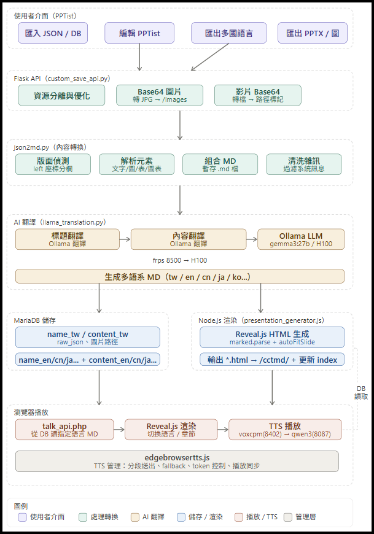

<!-- .slide: data-transition="convex" --> ## <span style="color:red">AI 應用工程 作品履歷</span> **黃政傑** **國立臺北科技大學 機械工程系 機電整合碩士班** **Email：huangjie095@gmail.com** --- <!-- .slide: data-transition="convex" --> # OUTLINE - 關於我 - 8D 客訴報告 AI Agent（產學合作） - Order：地端多模態 AI 設計平台 - AI 多語語音教學簡報平台（碩士研究） - 明新熊：邊緣 AI 語音問答（產學合作） - 技能總覽 --- <!-- .slide: data-transition="convex" --> # 關於我 ---- <!-- .slide: data-transition="convex" --> ## 關於我 - 國立臺北科技大學 機電整合碩士班，專注把 **AI 落地到真實產業流程** - 碩士研究：**地端多語 AI 語音教學簡報平台** - 參與 **4 個產學合作**：被動元件客訴、室內設計、PCB / LED 瑕疵檢測、邊緣 AI 語音問答 - 從**資料盤點 → 架構設計 → 開發部署 → 實測驗證**全程經手，且全部**地端部署** --- <!-- .slide: data-transition="convex" --> # 8D 客訴報告 AI Agent 產學合作｜被動元件製造商｜2026/09 – 2027/12 ---- <!-- .slide: data-transition="convex" --> ## 問題與目標 - 歷年客訴登錄表、8D 報告（PDF / Word / Excel）與 BPM 系統各自分散 → **資料孤島，只能逐年逐筆點開** - 以 **RAG + Agentic Workflow** 打造四大模組： 1. 跨系統、跨年度**客訴知識庫** 2. **異常單 AI 開立**（語音 / 文字自動擷取料號、不良率、不良現象） 3. **8D 報告 D3–D7 自動生成**，同步填寫 BPM 處理單與客訴登錄表 4. 介接 ERP / MES 的**客訴追溯分析儀表板** - 限制：**全地端部署**、資料不可外流 ---- <!-- .slide: data-transition="convex" --> ## 知識庫建置流程  ---- <!-- .slide: data-transition="convex" --> ## 資料盤點成果 - 解析 **481** 份歷年檔名，建立 80+ 家客戶別名對照（OpenCC 繁簡轉換） - 公司辨識覆蓋率 **84%**，自動排除 **42** 組 Word/PDF 重複檔 - 比對各家 8D 格式，收斂成 **D0–D8 統一欄位** <!-- 可放：檔名解析工具（去識別化）截圖 --> ---- <!-- .slide: data-transition="convex" --> ## Dify 工作流 - 文件擷取 → 依 D0~D8 切段 → LLM 抽欄位 → **MCP 寫回知識庫** - 自動判斷同案版次：舊版另存，主庫只留最新版 <!-- 放：Dify 工作流畫布截圖（注意遮掉客戶名稱） --> --- <!-- .slide: data-transition="convex" --> # Order：地端多模態 AI 設計平台 接手學長碩論系統・依業主需求擴充與強化 ---- <!-- .slide: data-transition="convex" --> ## 我的角色 - **接手**：學長碩論「多模態生成式 AI 企業智慧應用平台」 - **補完**：未完成的功能面與資安面 - **擴充**：依室內設計業主（Order）需求新增功能 - 圖片類型自動判讀（室內空間 / 材質樣本） - 材質・色卡檢索 - 相似圖片延伸瀏覽（不再只有問答中的 5 張） - 多圖融合設計生成 ---- <!-- .slide: data-transition="convex" --> ## 系統架構  ---- <!-- .slide: data-transition="convex" --> ## 圖片匯入與資料庫  拖曳資料夾即可批次匯入，**依子資料夾（案場）各自分析**，不會混在一起 ---- <!-- .slide: data-transition="convex" --> ## 判讀與檢索流程  ---- <!-- .slide: data-transition="convex" --> ## 原本：AI 對話檢索  輸入 Prompt「幫我找舊款客廳的照片」→ Agent 透過 MCP 呼叫 `search_images` 工具 → 回傳 **5 張** ---- <!-- .slide: data-transition="convex" --> ## 新增：依標籤延伸瀏覽  AI 自動標籤 → 點「現代簡約」→ 找出 **1139** 張同風格圖片 ---- <!-- .slide: data-transition="convex" --> ## 多圖融合設計生成  --- <!-- .slide: data-transition="convex" --> # AI 多語語音<br>教學簡報平台 碩士研究 ---- <!-- .slide: data-transition="convex" --> ## 要解決的問題 - 實驗室原有流程要老師**直接寫 Markdown**，對習慣 PowerPoint 的老師門檻太高 - 引入 PPTist 圖形化編輯後，新問題出現： - PPTist 是**固定畫布＋絕對座標**，中文翻成英文/德文後**文字變長 → 溢位、重疊** - JSON 混雜座標、樣式與大量 base64，直接丟給 LLM **耗 token、易改壞欄位** ---- <!-- .slide: data-transition="convex" --> ## 系統整體架構  ---- <!-- .slide: data-transition="convex" --> ## 雙路徑資料流程 <div style="display:flex; align-items:center; gap:40px;"> <div style="flex:0 0 45%;"> <p></p> </div> <div style="flex:1; text-align:left; font-size:0.8em;"> <p><b>路徑 A：保留原始 JSON</b><br>供 PPTist 隨時重新載入編輯</p> <p><b>路徑 B：抽成 Markdown</b><br>依元素座標推導閱讀順序<br>文字與媒體分離</p> <p><b>翻譯</b><br>錯字表 → 系所專有名詞表<br>→ LLM 逐頁平行翻譯</p> <p><b>播放</b><br>Reveal.js 流式排版＋TTS 語音</p> </div> </div> ---- <!-- .slide: data-transition="convex" --> ## 老師端：PPTist 編輯  ---- <!-- .slide: data-transition="convex" --> ## 一鍵匯出 12 種語言  - 錯字表修正 → 系所專有名詞表 → vLLM 逐頁平行翻譯 - 圖片、HTML 註解以 placeholder 保護，翻完再還原 ---- <!-- .slide: data-transition="convex" --> ## 學生端：簡報看板  - 依科目瀏覽、即時切換語言，語音逐段預取 ---- <!-- .slide: data-transition="convex" --> ## 附加功能：AI PPT 自動產生  輸入主題 → 自動產生大綱並套模板，中英文輸入各自產生對應語系草稿 ---- <!-- .slide: data-transition="convex" --> ## 技術取捨 | 項目 | 做法 | 理由 | |---|---|---| | 版面 | 捨棄逐像素還原，改流式排版 | 換取翻譯後版面彈性 | | 翻譯 | Ollama 多節點路由 → vLLM | 連續批次，單實例即可併發 | | 語音 | VoxCPM 預設、Qwen3-TTS 備選 | 即時性優先，長文本可切換 | | 權限 | HMAC token＋後端查系所 | 不信任前端傳入身分 | --- <!-- .slide: data-transition="convex" --> # 明新熊：邊緣 AI 語音問答 產學合作｜明新科技大學｜2024 結案 ---- <!-- .slide: data-transition="convex" --> ## 為什麼用雙機？ - **單機瓶頸**：Jetson Orin Nano 只有 8GB - LLM 推論佔滿 GPU 與記憶體，同時跑語音辨識就嚴重延遲 - 記憶體接近上限時觸發 OOM Killer，服務無預警崩潰 - **雙機分工** - Nano 1（感知）：語音輸入輸出（STT・TTS） - Nano 2（思考）：LLM 推論＋ChromaDB 向量檢索 - 語音與文字生成非同步處理，降低等待體感 ---- <!-- .slide: data-transition="convex" --> ## 系統架構  ---- <!-- .slide: data-transition="convex" --> ## 記憶體配置（各 8GB） | 節點 | 主要負載 | 用量 | |---|---|---| | Nano 1（感知） | Whisper STT・前端介面・TTS | STT 1.5 GB＋前端 0.5 GB | | Nano 2（思考） | Mistral-7B（GGUF）＋RAG | LLM 4.5 GB＋RAG 1.0 GB | | 兩台共同 | 系統環境 | 各 1.5 GB | 拆開後每台都保留餘裕，不再觸發 OOM ---- <!-- .slide: data-transition="convex" --> ## 問答流程 <div style="display:flex; gap:28px; align-items:stretch;"> <div style="flex:1; display:flex; flex-direction:column;"> <pre style="background:#1e1e1e; color:#e6e6e6; font-size:0.42em; line-height:1.5; padding:14px 18px; border-radius:8px; text-align:left; white-space:pre; box-shadow:none; width:100%; margin:0; flex:1; box-sizing:border-box;">[STT] 偵測語言: zh [0.00s -> 2.10s] 機械系有哪些特色課程？ 完整轉錄: 機械系有哪些特色課程？ <span style="color:#7ee787">✔ 轉錄資料成功傳輸至 RAG 服務</span></pre> <p><b>Nano 1（感知）</b><br>語音 → 文字 → 送往 Nano 2</p> </div> <div style="flex:1; display:flex; flex-direction:column;"> <pre style="background:#1e1e1e; color:#e6e6e6; font-size:0.42em; line-height:1.5; padding:14px 18px; border-radius:8px; text-align:left; white-space:pre; box-shadow:none; width:100%; margin:0; flex:1; box-sizing:border-box;">--- 接收到 STT 查詢：機械系有哪些特色課程？ [RAG 檢索結果] top 5 1. sec=機械系 特色選修課程… 2. sec=機械系 專業實驗室設備… 明新熊：本系積極網羅新竹科學園區及工研院 高階研究人員擔任特色選修課程， 兼收產學合一、理論與實務並重之效。 <span style="color:#7ee787">POST /process_transcript 200 OK</span></pre> <p><b>Nano 2（思考）</b><br>檢索相關段落 → LLM 生成回答</p> </div> </div> <p style="font-size:0.5em; color:#666;">※ 上方 log 為流程示意（非實測輸出）｜<b>實測數據</b>：Whisper 轉錄約 <b>1.2 秒</b>（含 VAD）、RAG＋LLM 端到端約 <b>5.7 秒</b></p> --- <!-- .slide: data-transition="convex" --> # 技能總覽 ---- <!-- .slide: data-transition="convex" --> ## 技能總覽 | 領域 | 技術 | |---|---| | LLM / Agent | Dify、MCP、RAG、LangGraph、FastAPI SSE | | 模型部署 | vLLM、Ollama、ComfyUI、guidellm | | 多模態 | Qwen3-VL、Flux.2、Hunyuan3D、OCR、ASR、TTS | | 電腦視覺 | OpenCV、MediaPipe、YOLOv8 | | 全端 | Python (FastAPI / Flask)、React、Vue、PHP、MariaDB、Qdrant | --- <!-- .slide: data-transition="convex" --> # *感謝您的閱讀*